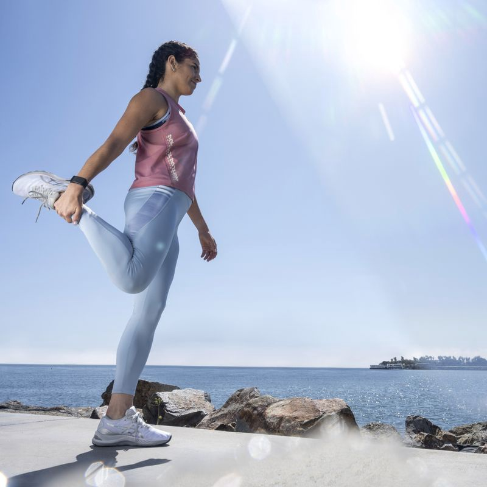

ASICS Global - The Official Corporate copy . ASICS Global - The Official Corporate copy Shanghai, known as the Pearl of the Orient, had always been an international center in China. But the city was left in near total destruction during the Sino-Japanese War. Following the Marco Polo Bridge Incident in 1937, the Japanese headed for its goal: the capital of China, Nanking. Shanghai was a key battleground before they were able to reach the capital of China, which brought on the “Stalingrad on the Yangtze.” As a leader of the Nationalist Government, Chiang Kai-Shek would lead the Kuomintang (“KMT”) Army into preparing the city to repel the oncoming smaller, yet technologically superior and more experienced Kwantung Army under the combat-experienced graduate of Japan’s elite war college, General Iwane Matsui. Initially, the Imperial Japanese Army had estimated the battle to be over within three days due to their military superiority. However, the Japanese would be engaged in fighting for three months, one week, and six days against the KMT’s best-trained divisions in one of the largest and bloodiest battles of the Sino-Japanese War. The Japanese would be forced into close combat urban warfare, alarmingly similar to the rat warfare between the Germans and Russians during the Battle of Stalingrad five years later, allowing many historians to name the Battle of Shanghai as “the Stalingrad of the Yangtze.” Special Japanese forces also used chemical weapons against the entrenched KMT soldiers. Only after the KMT military had run entirely out of ammunition, food, and water, were they forced to surrender or flee from the city which had been turned from a populated metropolitan center into a city of rubble and ashes. The city of Shanghai also housed a large Jewish refugee and foreign expat population, which was comprised of mostly Americans and British civilians. During the battle, many lost their homes and were forcibly squeezed into small districts. Following the battle, many foreigners chose to stay and live among the Japanese as the Japanese also used their communities as military bases or headquarters. Due to the neutrality between Japan and the Western nations, the foreign communities did not face the same punishment as the Chinese civlians who were forced to remain in Shanghai after the defeat.Shanghai, known as the Pearl of the Orient, had always been an international center in China. But the city was left in near total destruction during the Sino-Japanese War. Following the Marco Polo Bridge Incident in 1937, the Japanese headed for its goal: the capital of China, Nanking. Shanghai was a key battleground before they were able to reach the capital of China, which brought on the “Stalingrad on the Yangtze.” As a leader of the Nationalist Government, Chiang Kai-Shek would lead the Kuomintang (“KMT”) Army into preparing the city to repel the oncoming smaller, yet technologically superior and more experienced Kwantung Army under the combat-experienced graduate of Japan’s elite war college, General Iwane Matsui. Initially, the Imperial Japanese Army had estimated the battle to be over within three days due to their military superiority. However, the Japanese would be engaged in fighting for three months, one week, and six days against the KMT’s best-trained divisions in one of the largest and bloodiest battles of the Sino-Japanese War. The Japanese would be forced into close combat urban warfare, alarmingly similar to the rat warfare between the Germans and Russians during the Battle of Stalingrad five years later, allowing many historians to name the Battle of Shanghai as “the Stalingrad of the Yangtze.” Special Japanese forces also used chemical weapons against the entrenched KMT soldiers. Only after the KMT military had run entirely out of ammunition, food, and water, were they forced to surrender or flee from the city which had been turned from a populated metropolitan center into a city of rubble and ashes. The city of Shanghai also housed a large Jewish refugee and foreign expat population, which was comprised of mostly Americans and British civilians. During the battle, many lost their homes and were forcibly squeezed into small districts. Following the battle, many foreigners chose to stay and live among the Japanese as the Japanese also used their communities as military bases or headquarters. Due to the neutrality between Japan and the Western nations, the foreign communities did not face the same punishment as the Chinese civlians who were forced to remain in Shanghai after the defeat.Shanghai, known as the Pearl of the Orient, had always been an international center in China. But the city was left in near total destruction during the Sino-Japanese War. Following the Marco Polo Bridge Incident in 1937, the Japanese headed for its goal: the capital of China, Nanking. Shanghai was a key battleground before they were able to reach the capital of China, which brought on the “Stalingrad on the Yangtze.” As a leader of the Nationalist Government, Chiang Kai-Shek would lead the Kuomintang (“KMT”) Army into preparing the city to repel the oncoming smaller, yet technologically superior and more experienced Kwantung Army under the combat-experienced graduate of Japan’s elite war college, General Iwane Matsui. Initially, the Imperial Japanese Army had estimated the battle to be over within three days due to their military superiority. However, the Japanese would be engaged in fighting for three months, one week, and six days against the KMT’s best-trained divisions in one of the largest and bloodiest battles of the Sino-Japanese War. The Japanese would be forced into close combat urban warfare, alarmingly similar to the rat warfare between the Germans and Russians during the Battle of Stalingrad five years later, allowing many historians to name the Battle of Shanghai as “the Stalingrad of the Yangtze.” Special Japanese forces also used chemical weapons against the entrenched KMT soldiers. Only after the KMT military had run entirely out of ammunition, food, and water, were they forced to surrender or flee from the city which had been turned from a populated metropolitan center into a city of rubble and ashes. The city of Shanghai also housed a large Jewish refugee and foreign expat population, which was comprised of mostly Americans and British civilians. During the battle, many lost their homes and were forcibly squeezed into small districts. Following the battle, many foreigners chose to stay and live among the Japanese as the Japanese also used their communities as military bases or headquarters. Due to the neutrality between Japan and the Western nations, the foreign communities did not face the same punishment as the Chinese civlians who were forced to remain in Shanghai after the defeat.

INVESTOR RELATIONS
ASICS Growth Plan 2020 has been developed to maximize our global performance.
.png)
PRESS CENTER
Visit our Press Center to keep updated with ASICS news
.png)
.png)
SUSTAINAVILITY
Through our products and services, we aim to contribute to a healthy society. By integrating sustainability into every aspect of our business, we aim not only to create value for our customers and shareholders, but also for the world around us.
CAREER
Reach out to the world and grow as one team.
The History of ASICS
Kihachiro Onitsuka Founds Onitsuka Co., Ltd.